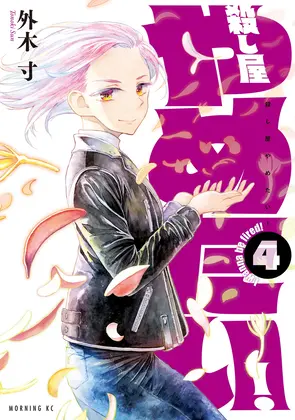

| Quick Facts | |
|---|---|
 | |
| Season: | X |
| Contract: | Arcana |
| Contractor: | Frazzle |
| Completed: | 4/4 Volumes |
| Format: | Manga |
| Author: | Sun Tonoki |
| Date: | 2021-2022 |
| Type: | Seinen |
| Genre: | Yuri, Action |
| Link: | Anilist |
Welcome to my review about Koroshiyo Yametai ! It means "I wanna be fired", and it sums up pretty well the story, that is a woman employed as a killer, Rose, who wants to quit her job to love another girl, Benika. This was a very intriguing scenario so I was quite excited to read this short manga.
I thought the story would focus on the difficult romance between the two girls, but it rather explored how Rose managed the awkward situation between all characters. I was a bit disappointed to understand that the yuri romance would fall in the background. What's more, the plot behind all this is nothing complex, only two factions fighting against the same person for different reasons, and some events felt quite underwhelming. The few battles held not so much suspense, since the outcome is always for Rose to find an unexpected solution.
Even the end was unsatisfying, I didn't understand most of the outcome, and Rose doesn't leave with her true appearance.
The overall style of the manga is somehow modern, there is no real particularity nor issues in this work. The only thing interesting to note is that despite all the disguises of Rose, each time she remains recognizable. The places are well designed, and there are beautiful details in the church.
The potential of this manga was really high, but by focusing on the slightly boring action, I completely lost interest in the story, and the end was representative of this. Overall, I keep a feeling of a "childish" manga, holding no real stake. This may be symptoms of a first manga by its author, and I'm sure they will improve ! 3/10